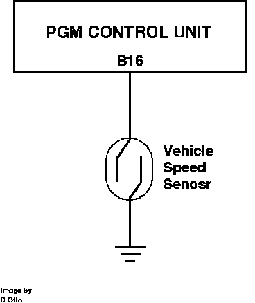

Vehicle Speed Sensor: Description and Operation
Vehicle Speed Sonsor Circuit:

The vehicle speed sensor is mounted inside the speedometer assembly. The sensor consists of a reed switch that is closed by a rotating magnet in the speedometer. The switch shorts ECU pin B16 to ground 4 times every revolution the speedometer cable makes. The sensor is used by the ECU to determine vehicle speed.